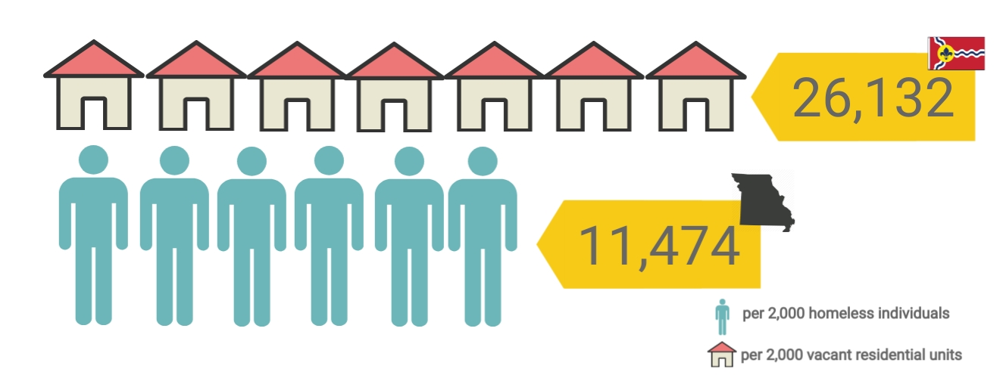

3,868
The total amount of vacant land in Saint Louis is 3,868 acres or 15.65km2. That is the size of the entire Cocos Islands near Australia.
Height of Vacant Housing in St. Louis
A total of 1,514 building floors are vacant in Saint Louis. If stacked one on top of the other, that would be more floors than 9 Burj Khalifas

Sources
STL Vacancy Data Portal: Number of residential units in St.Louis City (last updated June 2018).
Methods
Assumptions
We assumed floor heights are the same for all buildings.
Vacant Residential Units in comparison to Homeless Population
Sources
STL Vacancy Data Portal: Number of residential units in St.Louis City (last updated June 2018).
United States Interagency Council on Homelessness: Homeless population in the state of Missouri (last updated Jan 2019).
Methods
The homless population is the sum of a) individuals experiencing homelessness, excluding unccompanied young adults reported by U.S. Department of Housing and Urban Development (HUD), and b) sheltered and unsheltered homeless students in the 2017-2018 school year.
Assumptions
We discounted unccompanied minors in general homelessness statistics to include a superset of chronically and non-chronically homeless students.